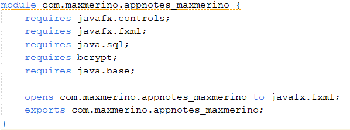

Quan vaig haver d'instal·lar les llibreries per connectar l'aplicació a la base de dades i per encriptar les contrasenyes no les podia importar, això passava perquè, per alguna raó, a l'arxiu module-info.java no sortien les llibreries com requeriments, per això vaig haver de escriure els requires manualment:
Quan vaig crear la primera pantalla amb FXML la selecció no era del primer textField i quan es pressionava la tecla tab es seleccionava un textField que no era el següent això era a causa que quan vaig afegir els textFields no els vaig col·locar en ordre de creació. Per tant ho vaig solucionar tornant a crear els camps per ordre.
Al buscador per compartir si s'escrivia el caràcter "%" o "_" es mostraven tots els usuaris de la base de dades, si hi haguessin mil·lers o mil·lions d'usuaris podria arribar a bloquejar o tancar l'aplicació. Això és a causa de la consulta sql, aquesta fa servir l'operador LIKE i entén com comodí el caràcter "%"" i "_" fent que seleccionés tots els usuaris amb qualsevol caràcter. La solució és simplement comprovar que el camp de text no inclogui aquests caràcters abans d'executar la consulta.